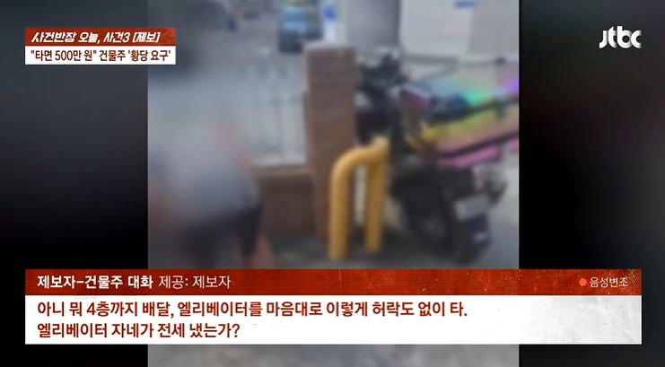

지난 30일 JTBC ‘사건반장’에 따르면 익산시에서 7년째 한식 배달 전문점을 운영하는 30대 남성 A씨는 지난달 19일 오후 2시쯤 한 빌라로 음식 배달을 갔다.
건물 입구에 오토바이를 세운 A씨는 엘리베이터를 타고 4층에 사는 단골손님에게 음식을 전달했다. 그런데 배달을 마치고 나오자 건물주가 입구를 가로막고 “네가 뭔데 엘리베이터를 타냐. 전세 냈냐”며 따졌다.
A씨는 상황을 피하려 했지만 시비가 계속되자 “그럼 세입자들에게 배달시키지 말라고 하라”고 받아쳤다. 그러자 건물주는 “네가 4층까지 뛰어 올라가면 되지 왜 엘리베이터를 타냐”며 배달기사들 때문에 관리비가 많이 나온다고 주장했다.
이어 A씨는 오토바이에 시동을 걸고 출발하던 순간 건물주가 자신의 오른쪽 팔꿈치를 잡아당겼다고 주장했다. 오토바이와 함께 오른쪽으로 넘어진 A씨는 오토바이 아래에 깔렸다. 또 이 과정에서 오토바이의 사이드미러·브레이크 레버·핸들 손잡이·배달통 등이 파손됐다.
오토바이 밑에서 빠져나온 A씨는 인근 편의점에서 물을 산 뒤 현장으로 돌아왔다. 당시 건물주는 오토바이를 일으켜 벽 쪽으로 밀고 있었다고 한다.
A씨가 항의하자 건물주는 “난 당긴 적 없다. 너 혼자 넘어져 놓고 왜 그러냐”며 책임을 부인했다. 수리비가 200만원을 넘을 것 같다는 말에는 “배달 기사가 엘리베이터를 타면 500만원을 내야 한다”며 A씨를 쫓아냈다.
이후 A씨는 진단서와 오토바이 파손 사진 등을 첨부해 경찰에 고소장을 제출했다.
건물주는 경찰 조사에서 배달기사들 때문에 관리비가 많이 나와 기분이 나빴다는 취지로 진술한 것으로 전해졌다.
경찰이 배달기사의 엘리베이터 이용을 제한하는 안내문을 붙이면 되지 않느냐고 묻자 “대학가 원룸촌인데 그런 걸 써 붙이면 대학생 세입자가 들어오지 않는다”며 거부했다고 한다.
A씨는 사건 발생 약 2주 전 허리디스크 진단을 받고 치료를 받던 중이었으며 사고 이후 증상이 악화했다고 호소했다.
경찰은 건물주를 폭행과 재물손괴 혐의로 검찰에 송치할 예정이다.
500만원은 건물주 니가 줘야겠네